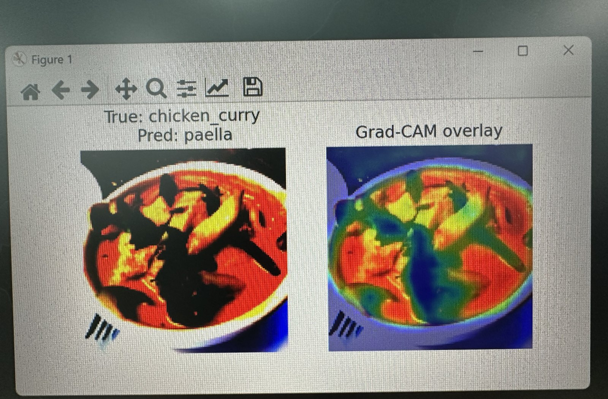
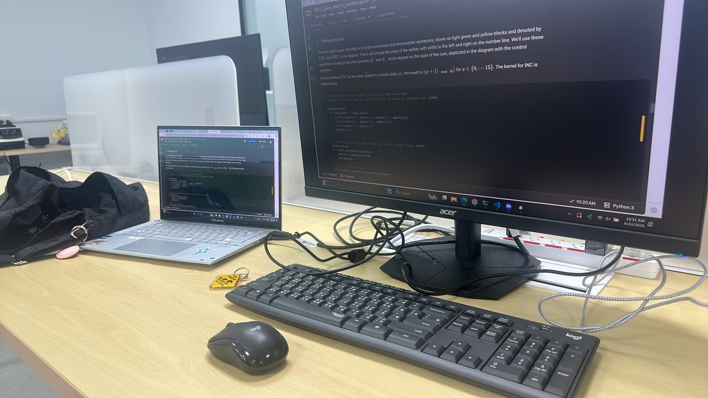

EinsNeXT
June to July 2025


What I built
I was recruited the summer before 11th grade and spent four weeks full time learning machine learning and quantum computing from zero. On the ML side I learned a full PyTorch workflow and trained CNNs on FashionMNIST, Oxford Pets and Food-101, plus a steganography detector that flags images with hidden data inside.
On the quantum side I worked through NVIDIA's CUDA-Q labs, built a Grover's algorithm password cracker, and simulated a circuit-injection attack that slips malicious gates into a quantum circuit.
Then I pitched my own project to tie the month together: a network intrusion detector trained on NSL-KDD, a standard dataset of real network attacks. A PyTorch model handles the confident cases and a CUDA-Q filter checks the uncertain ones.
What broke
My Oxford Pets model finished 30 epochs with a training loss of 0.10 and a test accuracy of 17.99%. I had shrunk the images to train faster without a GPU, and it memorized the training set instead of learning pets.
On Food-101, with 101 classes, I ran a grid search over learning rate, weight decay and dropout, then used Grad-CAM to see where the model looked when it called chicken curry paella. I also built ensembles, and my supervisor pointed out they weren't practical for this.
What I learned
Features beat models. Adding logged-in status and destination bytes took my detector from about 50% to about 90% before I touched the architecture.
A high number doesn't mean a hard problem. NSL-KDD with a random split is known to be easy, and my quantum filter is a set of threshold checks a normal if statement could do. The quantum half taught me CUDA-Q. It didn't make the detector better, and I'd rather say that than oversell it.
Results
The detector reached 99.72% accuracy on 5,039 test samples. My CUDA-Q work is on GitHub, 48 commits. I spent my last week researching quantum computing with a college intern, and alpha tested a coworker's AI model.